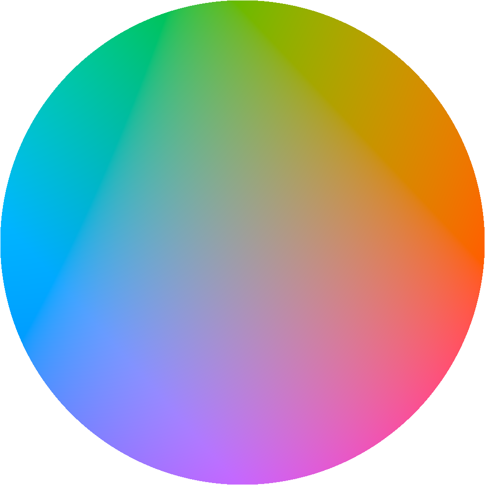

l = 0.7, c = 0.1687(Rec2020 한계)c = 0.2c = 0.3c = 0.4HSLl = 0.7, c = 0.1592(P3 한계)세로(900x1600)(450x800이긴 한데 Retina 어쩌고 때매 스샷 찍으면 900x1600임)정방형(1000x1000)oklab 그리드(a,b=-0.25~0.25, L=0.7)(canvas갖고 만듦)(챗지피티가 만듦)(P3임)(P3으로 변환하는 행렬 정확한지 확인 안 했는데 SRGB로 변환하는 거(확인함)랑 잘 맞는 거 같아서 그냥 확인 안 하기로 함)SRGB-0.2~0.2 정방형가로세로원원(-0.25~0.25)원(빨-파=상-하)원(빨-파=우-좌)

원(빨-파=좌-우)다이아몬드(빨-파=좌-우)